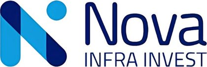
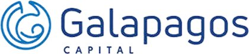
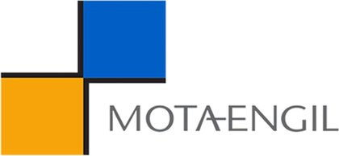
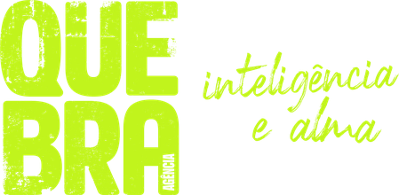

Três sócios, uma marca
Nova Infra Invest, Galápagos Capital e Mota-Engil precisam convergir visualmente em uma identidade única — daí o pedido explícito pela cor azul, ponto de contato entre as três marcas-mãe.
Uma marca para a Nova Infra Invest operar, defender e fazer crescer por toda a vida da concessão.



Este documento estrutura a proposta de serviço de branding da 116 Sertões, a partir do briefing enviado da Nova Infra Invest. O Consórcio 116 Sertões — formado por Nova Infra Invest, Galápagos Capital e Mota-Engil — venceu, em leilão na B3, a concessão da Rota dos Sertões (BR-116/324/BA/PE): 502 km entre o anel viário de Feira de Santana (BA) e o município de Salgueiro (PE), atravessando 16 municípios na Bahia e em Pernambuco. A concessão tem prazo de 30 anos, prevê cerca de R$ 4 bilhões em investimentos e potencial de gerar aproximadamente 60 mil empregos diretos, indiretos e induzidos.
Esse documento não traz conclusões artísticas, mas apontamentos que podem acelerar as próximas fases.
A marca 116 Sertões precisa resolver, ao mesmo tempo, três exigências objetivas colocadas pelo cliente:
Nova Infra Invest, Galápagos Capital e Mota-Engil precisam convergir visualmente em uma identidade única — daí o pedido explícito pela cor azul, ponto de contato entre as três marcas-mãe.
Usuários e motoristas da rodovia, comunidades dos 16 municípios impactados, cadeias produtivas do agronegócio e da indústria regional, colaboradores operacionais e administrativos, órgãos reguladores e o próprio mercado de capitais.
A marca não é apenas identidade visual de lançamento — é a plataforma que vai sustentar comunicação por três décadas de operação, incluindo resultados sociais e ambientais mensuráveis (redução de acidentes, redução de emissões de CO₂, geração de empregos).
O cliente foi explícito em dois desejos criativos: usar o azul como cor prioritária e evitar o repertório visual de escassez tradicionalmente associado ao sertão nordestino (o amarelo da terra rachada, a estética da seca). Como acessório, o cliente citou a Arara-azul-de-Lear.
Enxergamos nessa citação um elemento com potencial para conceituação da marca porque ele resolve exatamente o problema colocado pelo cliente.
A marca 116 Sertões será um território simbólico coerente e verdadeiro — não decorativo: o sertão não como lugar de escassez, mas como lugar de recuperação, modernização e integração. A rodovia entra nesse enredo como o mesmo tipo de intervenção: infraestrutura que recupera, conecta e preserva. A cor azul deixa de ser apenas o ponto de convergência corporativo dos três sócios e passa a carregar também repertório cultural e regional genuíno.
A Nova Infra Invest está assumindo uma das concessões mais estratégicas da malha rodoviária brasileira. A 116 Sertões não é apenas um ativo de infraestrutura — é a artéria por onde passa parte relevante da logística nacional: grãos, insumos, cargas, e as pessoas que fazem esse fluxo acontecer todos os dias.
Isso muda completamente o que uma marca precisa ser. Não estamos falando de um logotipo elegante para um relatório institucional.
Estamos falando de um sistema de identidade que vai funcionar em condições reais: sob sol e chuva, em uma placa a 100 km/h, na lateral de um caminhão, no capacete de quem está na pista, no uniforme de quem atende uma ocorrência às 3 da manhã.
É esse o padrão de exigência com o qual a Agência Quebra trabalha. Não construímos marcas para serem admiradas em um brandbook fechado numa gaveta — construímos marcas para serem usadas, com rigor, em escala, por anos.
A marca como sistema de decisões, não apenas como estética.
Para uma concessão como a 116 Sertões recomendamos uma marca que responda, ao mesmo tempo, a duas exigências:
A confiança que se espera de quem administra um ativo público de infraestrutura crítica.
O vínculo genuíno com as regiões, comunidades e rotas do sertão brasileiro que dão identidade ao empreendimento.
A Quebra trabalha com uma metodologia própria, estruturada como uma cadeia lógica:
Cada etapa existe para reduzir ambiguidade e entregar, para a etapa seguinte, algo verificável — não uma opinião, mas um insumo que pode ser sustentado.
Cada decisão de marca — de um tom de voz a uma cor de token — é rastreável até a evidência ou a decisão estratégica que a sustenta. Isso é o que permite que a equipe de marketing e comunicação da Nova Infra Invest tenha todas as ferramentas para defendê-la internamente e escalá-la com autonomia.
O entregável final não é um PDF de identidade visual. É um Guia de Marca vivo, escrito em linguagem prescritiva e organizada por tarefa — no mesmo raciocínio por trás de marcas como Spotify ou Duolingo, adaptado à realidade de uma concessão rodoviária.
Para a 116 Sertões, isso significa que a mesma marca precisa nascer pronta para se desdobrar, com coerência absoluta, em toda a cadeia de uso real da concessão:
Legibilidade e reconhecimento em alta velocidade.
Presença institucional em movimento.
Identidade que também comunica segurança.
A marca como experiência humana, na linha de frente.
Materiais para investidores e órgãos reguladores.
A marca falando com motoristas, comunidades e o mercado.
Um mesmo conjunto de decisões — cor, tipografia, espaçamento, tom de voz — se propaga de forma consistente para cada uma das aplicações, sem depender de reinterpretação manual a cada novo material.
Pesquisa e benchmarking visual — moodboard de referências em concessões rodoviárias nacionais e internacionais (ex.: Sistema Anhanguera-Bandeirantes, administrado pela Motiva AutoBAn), para orientar decisão sem antecipar criação.
Validação do azul como cor mandatória de convergência dos três sócios, e incorporação do território simbólico — não decorativo, e sim ligado à narrativa de recuperação do sertão.
Desenvolvimento do símbolo e do logotipo, nas versões solicitadas: aberta e fechada, aplicação horizontal e vertical, monocromática e reduzida para redes sociais. Uma marca preparada para operar nos âmbitos institucionais e operacionais.
Posicionamento como infraestrutura que integra e evolui.
Tom de voz institucional, validação de nomenclatura das peças e de eventual assinatura/tagline (o nome 116 Sertões já está definido pelo cliente).
Definição do que a marca 116 Sertões é e não é — tom, atributos e posicionamento em relação aos três sócios e ao setor de concessões.
Definição de família tipográfica primária (uso institucional) e, se necessário, secundária (sinalização e uso operacional), com hierarquia de textos.
Azul mandatório mais cores complementares de apoio, usadas para diferenciar frentes (administrativa, operacional, segurança) sem romper a unidade da marca.
Padronagens e iconografia como elemento gráfico secundário — aplicável em papelaria, ambientes digitais e conteúdo institucional.
Grid de construção do logotipo, área de proteção (respiro mínimo) e tamanhos mínimos de reprodução, garantindo legibilidade em qualquer suporte — de crachá a plotagem de veículo.
Sistema de sim/não com exemplos de uso correto e incorreto, essencial para uma marca operada por múltiplas equipes de campo ao longo do período de concessão.
Regras de coexistência gráfica com as marcas de Nova Infra Invest, Galápagos Capital e Mota-Engil, e alinhamento com o manual de marca já existente da Nova Infra Invest.
Referências visuais de mercado — para inspirar a escala e a ambição do sistema, sem antecipar criação.
Aplicação da identidade visual nos veículos de operação.
Nossos dezoito anos de interlocução direta com C-levels em projetos estratégicos de infraestrutura e concessão dão à Quebra repertório para tratar branding de concessão rodoviária como o que ele é: um ativo de negócio, não apenas uma peça isolada de design.
A agência fala a língua dos decisores e usa repertório cultural genuíno como matéria-prima estratégica, não decoração. O foco permanece no resultado mensurável: entrega clara, rápida e pronta para operar.
Cada escolha visual e verbal nasce de uma decisão estratégica documentada, não de preferência estética.
Uso de normas ISO e W3C, com vocabulário técnico compartilhável com áreas de compliance, jurídico e operação — não apenas com o time criativo.
Cada fase do projeto passa por um protocolo estruturado de decisão (Stage-Gate), com rastreabilidade completa, com controle e previsibilidade.
A marca nasce já preparada para as centenas de aplicações que uma concessão exige, com consistência garantida por arquitetura de tokens, não por sorte.
Nosso compromisso não é entregar uma marca bonita. É entregar uma marca para a Nova Infra Invest operar, defender e fazer crescer por toda a vida da concessão.
Branding — 116 Sertões · Consórcio Nova Infra Invest, Galápagos Capital e Mota-Engil
Conheça a Quebra